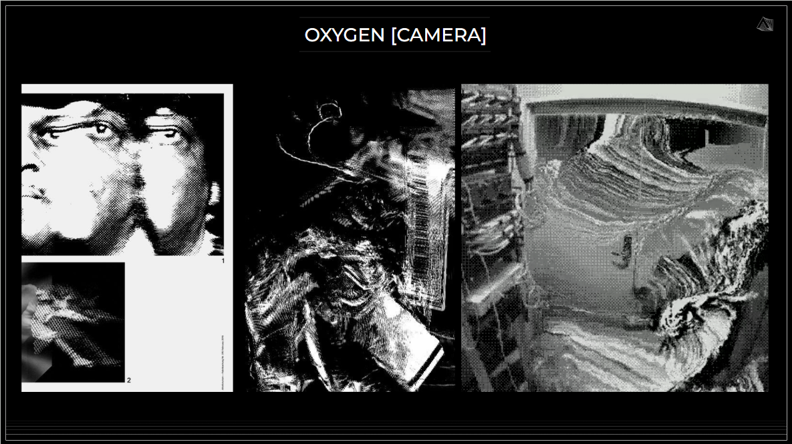
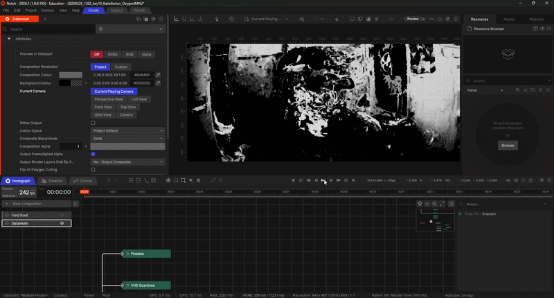
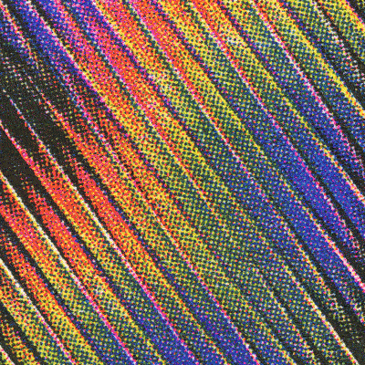
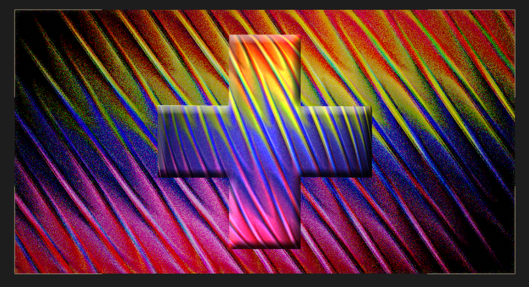
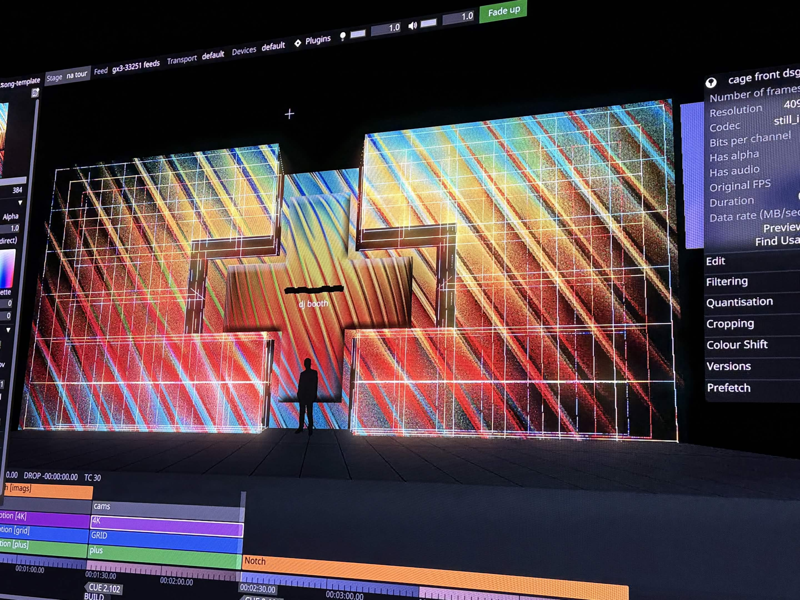
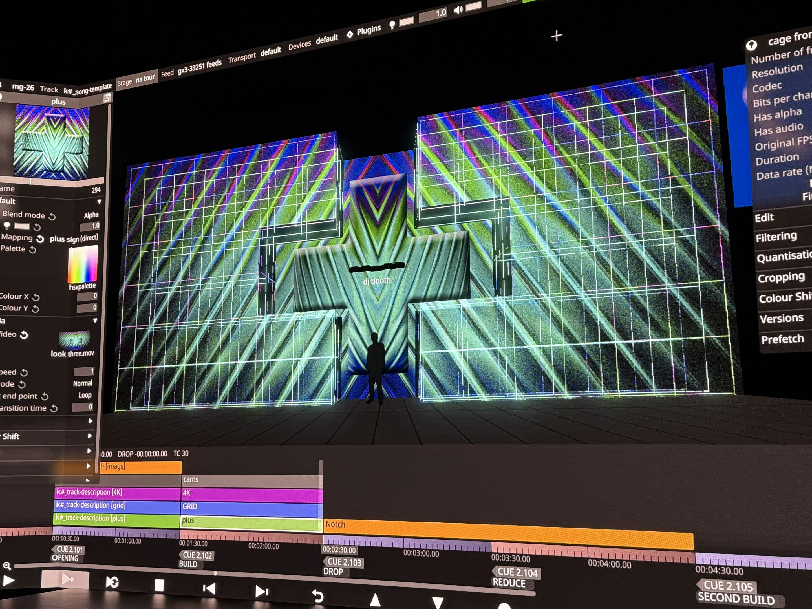

Building Concert Visuals for Martin Garrix x All Of It Now
CONTEXT
Project Overview
All of it Now (AOIN) is an LA-based design agency focused on immersive visuals for live events and real-time media systems. AOIN creates large-scale visual experiences for concerts, festivals, television, branded activations, and XR/AR productions. They’re known for combining creative direction with technical workflows and have collaborated with major artists and entertainment brands including BTS, KISS, and Riot Games.
They tasked our team to help them develop content for Martin Garrix’s Americas tour. The scope of the project includes both creative development (artist & tour research, visual language exploration, look development assets, still styleframes, and sample motion loops) and technical execution (video content, IMAG treatments, screens producing, and volumetric content) for the live show visuals. For this particular project, I was tasked with being the Lead Producer for our Compositions team, which meant I was in charge with assisting our team's lead in creating functional and effective content schedules, allocating creative/technical taks to team members, and ensuring timely quality assurance and delivery of our content. Since the compositions team was also the final team in our pipeline, I was also tasked with ensuring the polish and quality of our visual packages before they were sent to AOIN, as well as creating visual packages of my own.
PROCESS
Pipelines, pipelines, and more pipelines!
Our overall content production pipeline was organizaed into large production phases called "waves." Within each wave, we developed content for sets of songs with a particular visual narrative which AOIN called "keys." For each key in wave 1 and 2, AOIN provided a pitch deck that showed off their concepts for the visual narrative, often including different looks for the intro, build, drop, and reduce of a song. These decks would then serve as inspiration for our design team to create single finalized frames using photoshop, procreate, or other art programs known as "styleframes." It would then be up to the compositions team to put these styleframes to motion, whether that be through rendered content in After Effects or Blender, or real-time / IMAG content using TouchDesigner or NotchLC. During each step of this process, we would also send progress pics to AOIN. It was during this time that we would receive notes on what was working and what wasn't. This meant that each project required a lot of iteration between phases, meaning a lot of projects would often hop back and forth between design and compositions before eventually settling on a polished final deliverable.

AOIN Key 10 Breakout Deck

Notch IMAG Recreation
In wave 3, our pipeline shrunk a bit and turned into more of a content sprint. During this wave, AOIN provided some of their own styleframes outside of the keys as well as some more experimental content. Our design team dissolved and melded into our final compositions team during this process, as our main focus shifted towards pumping out as many variations of visual packages of intros, builds, drops, and reduces as possible.

Reference Image

In-Process Look

Final Deliverables on XR Stage

CHALLENGE
Team Coordination and Managing Scale on Tight Deadlines
There were many times throughout this process where certain workflows would be established only to be completely dismantled and reworked from the ground up within the week. Among the main processes I outlined in the beginning, there were several different smaller machines working within our system during any given moment. Each team also seemed to have different ways of tracking everything which made it hard whenever we needed something from the design team, whenever we needed to track the devlopment of a specific project pipeline, or when a member from design would move over to compositions or vice versa. While a lot of these challenges just required us to simply be adaptable to AOIN's requests, we were able to mitigate a lot of friction later on by having the producers of each of the teams be in closer contact with each other and design more uniform ways of tracking progress on each package.
This project also was daunting in terms of the scale of it all. Being chosen as a lead for the team at the final end of our main production pipeline meant I saw the start and end of every project. Each wave had about 4-6 keys in them and all needed at least an intro, build, and drop variation of the look, but also often had a reduce variation, as well. With 2-3 people working on each look, this meant that for each wave, there were around 20 looks to keep track of at a time with around 40-60 individual project files total. It also wasn't uncommon for the final deliverables of a look to have a deadline of about 1-2 weeks once it hit compositons. Managing that much content and having to coordinate with each individual artist in charge of creating them while also working on producing my own content on such tight turnarounds felt incredibly stressful at times. It only got easier once I was able to schedule specific dates for check-ins with my team and create open communication channels to where they could reach out to me and each other whenever there were any issues they faced creatively or technically. Our groups' shared google drive was the unsung hero of this effort, since it meant any team member could check the status of and help collaborate on any project file in our system. The closer collaboration of each team mentioned earlier also played a big role in helping manage everything. Once we reached the tail end of each wave, there was less of a need to have design team focused on styleframes, so the other compositions lead and I often employed their help in checking in with status of the final delivarables their styleframes were turned into.
IMPACT
On Tour
Quite a handful of our final looks made it into Martin Garrix's 2026 Americas Tour, which began in May. From just his first two shows, our team were able to spot several pieces of content we made that made it on the screen.
REFLECTION
A Look Into the Industry
This was one of my absolute favorite projects to be a part of simply because it gave me the clearest look into what working for the creative industry was actually like. While it sharpened a lot of my design and technical skills with programs like Touchdesigner and NotchLC, the biggest lessons I took from this challenge was how to work with people, how to work under a tight deadline, and how to work with people under a tight deadline. A lot of this project felt incredibly fast-paced and high-stress throughout its duration and there were definitely times when it felt like a lot to coordinate people under such high emotions. However, the talent and perserverance of our team definitely prevailed and only shone even more once we were working more closely together.
Prior to working with All of It Now, a lot of my experience and understanding of design was much more of a solitary experience. Sure, there were times where I had people before me or after me within the pipeline and I've had leads before that I would answer to, but I never had such a large-scale viewing of design until this experience. Being able to take a larger role within the whole process and work so closely with so many different designers, all with different skillsets, different talents, and different eyes was an incredible experience and I'm beyond grateful for the new bigger picture view of design it's given me.